概述
- 本篇文档总结软中断相关知识
软中断和硬中断的区别
硬中断包括中断、异常以及INT 指令这种软件中断，整个中断机制是纯硬件实现的逻辑，别管触发它的是谁，所以通通叫硬中断。
宏观层面
软中断是纯软件实现的，宏观效果看上去和中断差不多的一种方式。 什么叫宏观效果呢？意思就是说，中断在宏观层面看来，就是打断当前正在运行的程序，转而去执行中断处理程序，执行完之后再返回原程序。
从这个层面看，硬中断可以达到这个效果，软中断也可以达到这个效果，所以说宏观效果一样。 那微观层面呢？就是我们需要了解的原理啦。
微观层面
-
硬中断的微观层面，就是 CPU 在每一个指令周期的最后，都会留一个 CPU 周期去查看是否有中断，如果有，就把中断号取出，去中断向量表中寻找中断处理程序，然后跳过去。
-
软中断的微观层面，简单说就是有一个单独的守护进程，不断轮询一组
标志位，如果哪个标志位有值了，那去这个标志位对应的软中断向量表数组的相应位置，找到软中断处理函数，然后跳过去。
软中断实现原理
- 既然是内核守护线程来运行软中断处理程序, 那么首先要开启内核线程。 名字通常为「ksoftirqd/CPU 编号」, 比如 0 号 CPU 对应的软中断内核线程的名字是
ksoftirqd/0
开启内核软中断处理的守护线程

这个是我之前在讲解自制操作系统时的图，放在这里完全没有问题，这就是 Linux 的启动过程，文件名都一样。
唯一不同的是，我们这里内核主方法叫 kernel_start，Linux-2.6.0 里叫 start_kernel, 效果都一样.
接下来看这个入口方法。
asmlinkage void __init start_kernel(void) {
...
trap_init();
sched_init();
time_init();
...
rest_init();
}
省略了很多部分，但可以看出这个方法里就是各种初始化。
接着看 rest_init() 这个方法。
static void rest_init(void) {
kernel_thread(init, NULL, CLONE_KERNEL);
}
static int init(void * unused) {
do_pre_smp_initcalls();
}
static void do_pre_smp_initcalls(void) {
spawn_ksoftirqd();
}
看到一个 spawn_ksoftirqd()，翻译过来就是 spawn kernel soft irt daemon，开启内核软中断守护进程，这名字太直观了，都不用我讲了！
再往里跟。很长，但有用的信息很少。
__init int spawn_ksoftirqd(void) {
cpu_callback(&cpu_nfb, CPU_ONLINE, (void *)(long)smp_processor_id());
register_cpu_notifier(&cpu_nfb);
return 0;
}
static int __devinit cpu_callback(...) {
kernel_thread(ksoftirqd, hcpu, CLONE_KERNEL);
}
static int ksoftirqd(void * __bind_cpu) {
for (;;) {
while (local_softirq_pending()) {
do_softirq();
cond_resched();
}
}
}
asmlinkage void do_softirq(void) {
h = softirq_vec;
pending = local_softirq_pending();
do {
if (pending & 1) {
h->action(h);
h++;
pending >>= 1;
} while (pending);
}
前面的不用管，直接看最后一个方法，do_softirq()，这个方法展示了软中断处理守护进程所做的事情的精髓，我给翻译一下。
// 这就是软中断处理函数表（软中断向量表）
// 和硬中断的中断向量表一样
static struct softirq_action softirq_vec[32];
asmlinkage void do_softirq(void) {
// h = 软中断向量表起始地址指针
h = softirq_vec;
// 这个是软中断标志位们，一次性拿到所有的软中断标志位
pending = local_softirq_pending();
do {
// 此时的软中断标志位有值（说明有软中断）
if (pending & 1) {
// 去对应的软中断向量表执行对应的处理函数
h->action(h);
// 软中断向量表指针向后移动
h++;
// 同时软中断处理标志位也向后移动
pending >>= 1;
} while (pending);
}
这翻译还没看明白，那我来几个图你就懂了。
首先 h 代表软中断向量表 softirq_vec，和硬中断的中断向量表的存在是一个目的，就是个数组嘛，然后里面的元素存储着软中断处理程序的地址指针，在 action 中。

然后 pending 代表软中断标志位（们）。
这里完全由于 Linux 里用了好多 C 语言的宏定义搞得很绕，我先放出来，别担心。
typedef struct {
unsigned int __softirq_pending;
unsigned long idle_timestamp;
unsigned int __nmi_count; /* arch dependent */
unsigned int apic_timer_irqs; /* arch dependent */
} irq_cpustat_t;
extern irq_cpustat_t irq_stat[]; /* defined in asm/hardirq.h */
#define __IRQ_STAT(cpu, member) (irq_stat[cpu].member)
#define __IRQ_STAT(cpu, member) ((void)(cpu), irq_stat[0].member)
#define softirq_pending(cpu) __IRQ_STAT((cpu), __softirq_pending)
#define local_softirq_pending() softirq_pending(smp_processor_id())
pending = local_softirq_pending();
把这些宏定义都翻译过来，再去掉多处理器的逻辑，就当只有一个核心，就变得很简单了。
pending = irq_stat[0].__softirq_pending;
它就是个 int 值而已，32 位。
回过头看之前的，pending（软中断标志位）与 h（软中断向量表）的向后移动的步长。
// 软中断向量表指针向后移动
h++;
// 同时软中断处理标志位也向后移动
pending >>= 1;
可以看出软中断标志位的一位对应着软中断向量表中的一个元素，这就不难理解为什么中断向量表这个数组大小是 32 位了。

好了，这样这个内核软中断处理这个守护进程做的事，就完全搞懂了。
就是不断遍历 pending 这个软中断标志位的每一位，如果是 0 就忽略，如果是 1，那从上面的 h 软中断向量表中找到对应的元素，然后执行 action 方法，action 就对应着不同的软中断处理函数。
而且也能看到，内核软中断处理守护进程，在 Linux 启动后，会自动跑起来，那也就代表了，软中断机制生效了。 如果让你使用这个内核功能，做软中断的事情，那不难想象，很简单。
-
第一步，
注册软中断向量表，其实就是把软中断向量表的每个 action 变量赋值，相当于硬中断中注册中断向量表的过程。 -
第二步，
触发一个软中断，其实就是修改 pending 的某个标志位，触发一次软中断，相当于硬中断中由外部硬件、异常、或者 INT 指令来触发硬中断一样。 而实际上，Linux 就是这样做的，和我们猜的一样，我们一步步看。
注册中断向量表
就是给 softirq_vec 这个软中断向量表，也是一个数组，里面的每一个元素的 action 附上值，赋的就是软中断处理函数的函数地址。
这代码很容易就可以想到，太好写了，就这样呗。
softirq_vec[0].action = NULL;
softirq_vec[1].action = run_timer_softirq;
softirq_vec[2].action = net_tx_action;
...
softirq_vec[31].action = xxx;
没错，就是这样，不要以为 Linux 有啥神奇的操作，也是得这样老老实实给他们赋值。 比如，网络子系统的初始化，有一步就需要注册网络的软中断处理函数。
subsys_initcall(net_dev_init);
static int __init net_dev_init(void) {
...
// 网络发包的处理函数
open_softirq(NET_TX_SOFTIRQ, net_tx_action, NULL);
// 网络收包的处理函数
open_softirq(NET_RX_SOFTIRQ, net_rx_action, NULL);
...
}
void open_softirq(int nr, void (*action)(struct softirq_action*), void *data)
{
softirq_vec[nr].data = data;
// 简直完全一样
softirq_vec[nr].action = action;
}
这和我们写的不能说是相似，简直完全是一样呀，只是多包装了一层函数叫 open_softirq 方便调用罢了。
NET_TX_SOFTIRQ 这些是枚举值，具体看这些枚举也会发现 Linux-2.6.0 中也不多。
enum
{
HI_SOFTIRQ=0,
TIMER_SOFTIRQ,
NET_TX_SOFTIRQ,
NET_RX_SOFTIRQ,
SCSI_SOFTIRQ,
TASKLET_SOFTIRQ
};
好奇翻了下 Linux-5.11，发现也不多
enum
{
HI_SOFTIRQ=0,
TIMER_SOFTIRQ,
NET_TX_SOFTIRQ,
NET_RX_SOFTIRQ,
BLOCK_SOFTIRQ,
IRQ_POLL_SOFTIRQ,
TASKLET_SOFTIRQ,
SCHED_SOFTIRQ,
HRTIMER_SOFTIRQ,
RCU_SOFTIRQ,
NR_SOFTIRQS
};
触发一次软中断
同上，这代码也很容易就可以想到，就这样呗。 你看，表示软中断标志位的 p 不是这样取值的么。
pending = local_softirq_pending();
取出来的是个 32 位的 int 值。
那只需要把 local_softirq_pending() 对应的标志位改成 1就触发了软中断了，比如我们想触发一个 2 号软中断，就像这样。

代码这么写就行了。
local_softirq_pending() |= 1UL << 2;
而 Linux 居然也是这么做的，我们看网络数据包到来之后，有一段代码。
#define __raise_softirq_irqoff(nr) \
do { local_softirq_pending() |= 1UL << (nr); } while (0)
static inline void __netif_rx_schedule(struct net_device *dev) {
list_add_tail(&dev->poll_list, &__get_cpu_var(softnet_data).poll_list);
// 发出软中断
__raise_softirq_irqoff(NET_RX_SOFTIRQ);
}
如果把 do while(0) 这种 C 语言宏定义的一种玩法去掉，其实就和我们的完全一样了，这回可真的是完全一样。
static inline void __netif_rx_schedule(struct net_device *dev) {
list_add_tail(&dev->poll_list, &__get_cpu_var(softnet_data).poll_list);
// 发出软中断
local_softirq_pending() |= 1UL << (NET_RX_SOFTIRQ)
}
所以我之前总是说，当你真的去接触这个东西的时候，一个个细节逐步拨开后，会发现一点也不难，而且都是顺理成章，和我们猜测的也一样。
小结
- 软中断没什么神奇的骚操作，
就是一组一位一位的软中断标志位，对应着软中断向量表中一个一个的中断处理函数，然后有个内核守护进程不断去循环判断调用，而已。 - 然后，由各个子系统调用
open_softirq负责把软中断向量表附上值。 - 再由各个需要触发软中断的地方调用
raise_softirq_irqoff修改中断标志位的值。 - 后面的工作就交给内核那个软中断守护进程，去触发这个软中断了，其实就是个遍历并查找对应函数的简单过程。

中断的上半部和下半部说明
-
中断的上半部是在具体 irq 号完全禁止的状态下执行的, 下半部则不是. 下半部由多种实现方式, 例如:
软中断、tasklet、workqueue, 只有workqueue是在进程上下文中执行, 可以睡眠和被重新调度, 而软中断和 tasklet 是不能睡眠的, 因为他是在中断上下文中执行. -
上半部核心函数是
do_irq()函数,每次调用do_irq()函数时，传入了 CPU 当前寄存器的状态.unsigned do_IRQ(struct pt_regs regs)

- 下半部运行时，允许硬中断（例如网卡下半部运行时，又允许其他硬中断了）
- 上半部的中断处理程序中，触发了下半部程序.
- 下半部程序都是在 do_softirq()函数中运行.
- 那么触发后，具体何时运行呢？ 在上半部中断处理程序返回时，或者在 ksoftirqd 线程里
- 对于硬件驱动的研发人员，可以用
-
- 1 request_irq()函数 —> 注册上半部中断处理程序
-
- 2 可以用 open_irq()函数 —> 注册下半部中断处理程序
中断处理程序的上部分和下半部可以理解为：
- 上半部直接处理硬件请求，也就是硬中断，主要是负责耗时短的工作，特点是快速执行；
- 下半部是由内核触发，也就说软中断，主要是负责上半部未完成的工作，通常都是耗时比较长的事情，特点是延迟执行；。Linux 中的软中断包括网络收发、定时、调度、RCU 锁等各种类型。
软中断执行的时机
在下列地方，待处理的软中断会被检查和执行：
a. 从一个硬件中断代码处返回时
b. 在 ksoftirqd 内核线程中
c. 在那些显示检查和执行待处理的软中断的代码中，如网络子系统中
软中断的常用优化技能
1 系统里有哪些软中断？
在 Linux 系统里，我们可以通过查看 /proc/softirqs 的 内容来知晓「软中断」的运行情况，以及 /proc/interrupts 的 内容来知晓「硬中断」的运行情况。
接下来，就来简单的解析下 /proc/softirqs 文件的内容，在我服务器上查看到的文件内容如下：
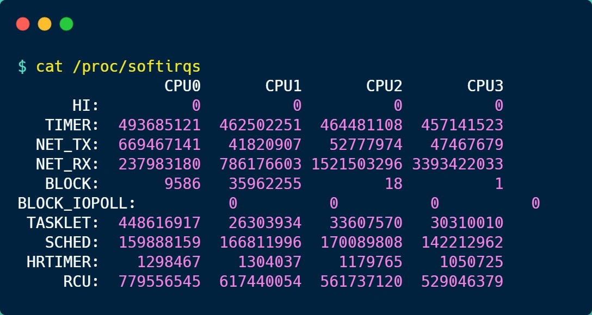
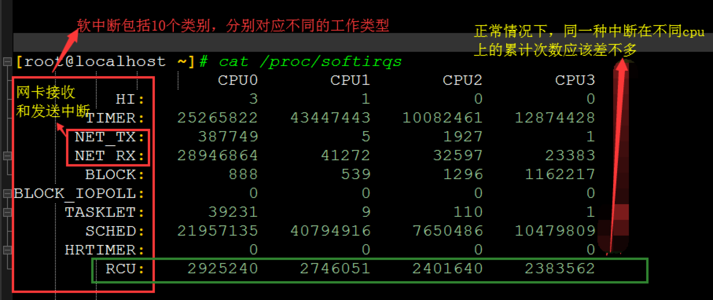
你可以看到，每一个 CPU 都有自己对应的不同类型软中断的累计运行次数，有 3 点需要注意下。
-
第一点，要注意第一列的内容，它是代表着软中断的类型，在我的系统里，软中断包括了 10 个类型，分别对应不同的工作类型，比如 NET_RX 表示网络接收中断，NET_TX 表示网络发送中断、TIMER 表示定时中断、RCU 表示 RCU 锁中断、SCHED 表示内核调度中断。
-
第二点，要注意同一种类型的软中断在不同 CPU 的分布情况，正常情况下，同一种中断在不同 CPU 上的累计次数相差不多，比如我的系统里，NET_RX 在 CPU0 、CPU1、CPU2、CPU3 上的中断次数基本是同一个数量级，相差不多。
-
第三点，这些数值是系统运行以来的累计中断次数，数值的大小没什么参考意义，但是系统的中断次数的变化速率才是我们要关注的，我们可以使用
watch -d cat /proc/softirqs命令查看中断次数的变化速率。
2 常用的一些优化经验
- 当你发现软中断占用的 CPU 利用率比较高时，可以从以下几个方面排查
- 网卡软中断的优化,把中断信号发给不同的 CPU，因为默认情况下所有中断都发给了 CPU0，导致 CPU0 被打满。把中断信号发给不同的 CPU 之后，多个 CPU 肯定比单个 CPU 处理起来快，因此性能能够显著提升。
- 硬件 CPU 功率是否开启最大性能模式. 如果一台机器是节能模式、一台是 MaxPerformance 模式, 那么在相同业务量的情况下, 节能模式那台的 CPU soft irq 就会高.
- 高流量 redis 服务器，并没有把网卡软中断负载均衡到所有 CPU 上，而是把网卡软中断绑定的 NUMA 架构中的其中一个节点（例如该节点是 4 核 CPU），然后把 redis 进程绑定的 NUMA 架构中的其他节点（例如其他 1 个节点）
3 如何定位软中断 CPU 使用率过高的问题？
要想知道当前的系统的软中断情况，我们可以使用 top 命令查看，下面是一台服务器上的 top 的数据：
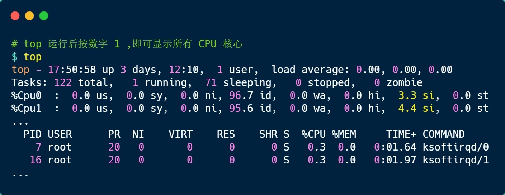
上图中的黄色部分 si，就是 CPU 在软中断上的使用率，而且可以发现，每个 CPU 使用率都不高，两个 CPU 的使用率虽然只有 3% 和 4% 左右，但是都是用在软中断上了。
另外，也可以看到 CPU 使用率最高的进程也是软中断 ksoftirqd，因此可以认为此时系统的开销主要来源于软中断。
如果要知道是哪种软中断类型导致的，我们可以使用 watch -d cat /proc/softirqs 命令查看每个软中断类型的中断次数的变化速率。
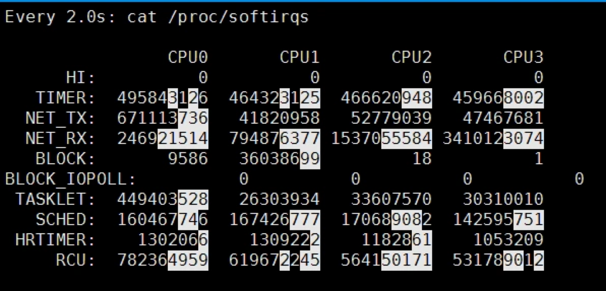
进而确定问题所在.
中断下半部三种机制的区别和基础使用
- 中断下半部有哪 3 种机制?
-
softirq,tasklet,workqueue
3 种下半部机制的区别
软中断使用的几个要点：
- 一个软中断不会抢占另外一个软中断。
- 惟一可以抢占软中断的是中断处理程序。
- 其他的软中断可以在其他处理器上同时执行
1 softirq 核心数据结构和使用
-
softirq即软中断，代码位于kernel/softirq.c文件中； -
每个软中断由
softirq_action结构表示：
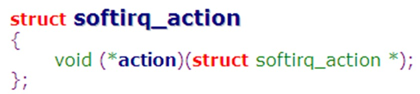
在softirq.c中定义了一个软中断向量数组softirq_vec：
static struct softirq_action softirq_vec[NR_SOFTIRQS] __cacheline_aligned_in_smp;
enum
{
HI_SOFTIRQ=0, /*用于高优先级的tasklet*/
TIMER_SOFTIRQ, /*用于定时器的下半部*/
NET_TX_SOFTIRQ, /*用于网络层发包*/
NET_RX_SOFTIRQ, /*用于网络层收报*/
BLOCK_SOFTIRQ,
BLOCK_IOPOLL_SOFTIRQ,
TASKLET_SOFTIRQ, /*用于低优先级的tasklet*/
SCHED_SOFTIRQ,
HRTIMER_SOFTIRQ,
RCU_SOFTIRQ, /* Preferable RCU should always be the last softirq */
NR_SOFTIRQS
};
数组的成员数由NR_SOFTIRQS决定，是一个枚举常量。
新增一个软中断时，需要在文件include/linux/interrupt.h 中添加一个枚举常量。
相关接口
-
注册软中断
-
void open_softirq(int nr, void (*action)(struct softirq_action *))
-
- 即注册对应类型的处理函数到全局数组
softirq_vec中。
- 即注册对应类型的处理函数到全局数组
-
触发软中断
-
void raise_softirq(unsigned int nr)
-
- 实际上即以软中断类型 nr 作为偏移量会置位
irq_stat[cpu_id]的成员变量__softirq_pending.
- 实际上即以软中断类型 nr 作为偏移量会置位
-
__softirq_pending字段中的每一个 bit，对应着某一个软中断，某个 bit 被置位，说明有相应的软中断等待处理。
这也是同一类型软中断可以在多个 cpu 上并行运行的根本原因。
软中断实例
以一个按键驱动的中断处理为例，将按键驱动的中断处理分成上下两部分：
- 上半部：读取键值，触发软中断
- 下半部：唤醒进程
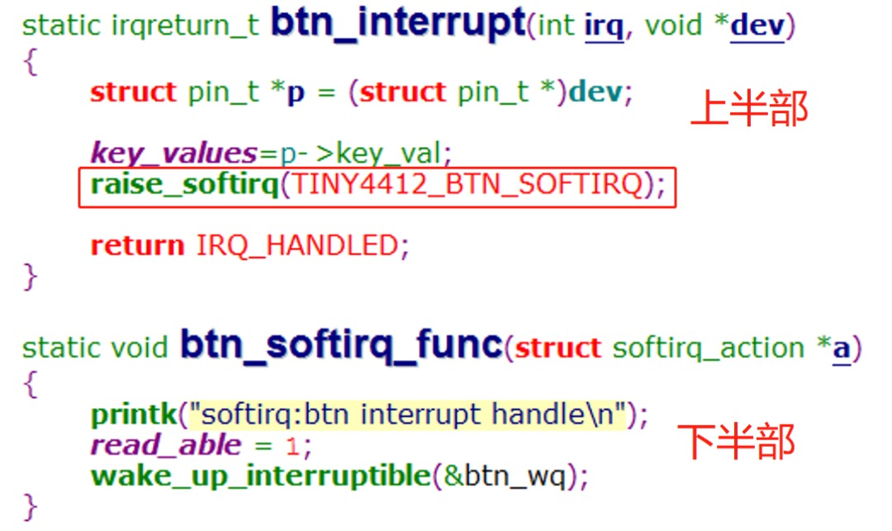
软中断的注册，在驱动的入口函数，注册软中断：
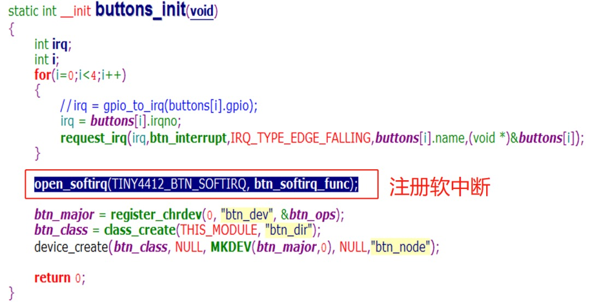
添加的枚举常量：
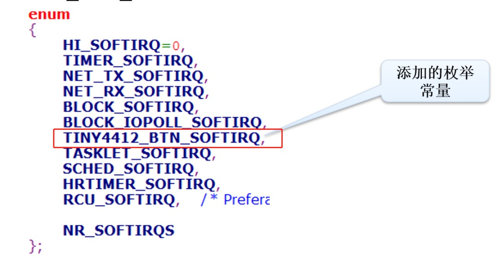
可以看到，使用软中断是需要修改内核，添加一个枚举的，有些繁琐。
所以，通常我们不建议擅自增加软中断的数量，如果需要新的软中断，尽可能把它们实现为基于软中断的tasklet形式。
2 tasklet 核心数据结构和使用
tasklet是利用软中断实现的一种下半部机制。
那是用软中断还是tasklet好呢？
选择到底是用软中断还是tasklet其实很简单：
-
通常你应该用
tasklet。就像我们在前面看到的，软中断资源有限，也麻烦，而且软中断的使用者屈指可数。它只在那些执行频率很高和连续性要求很高的情况下才需要。只有网络和SCSI2 个子系统直接使用软中断 -
而 tasklet 却有更广泛的用途。大多数情况下用
tasklet效果都不错，而且它们还非常容易使用。 -
因为
tasklet是通过软中断实现的，所以它们本身也是软中断。
tasklet 使用
tasklet 的使用步骤如下：
1、编写 tasklet 处理函数（下半部）
void my_tasklet_fun (unsigned long data)
2、声明 tasklet
//静态
DECLARE_TASKLET(my_tasklet,my_tasklet_fun,data);
//动态
struct tasklet_struct xxx;
tasklet_init(&xxx,tasklet_handler,dev)
3、调度 tasklet
tasklet_schedule(&my_tasklet);
登记 my_tasklet, 然后允许系统在合适的时间调度它。
tasklet 实例
- 以按键中断驱动为例：
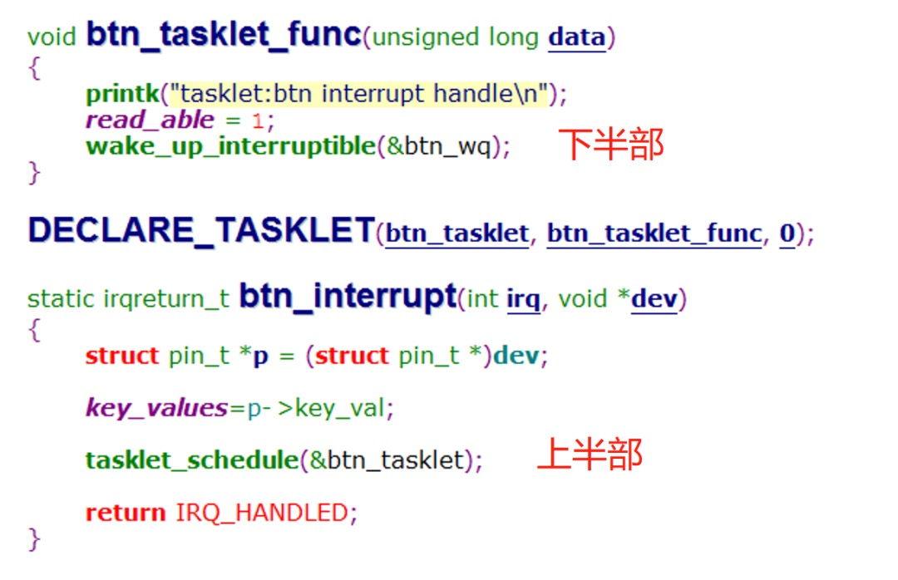
- 先使用
DECLARE_TASKLET静态声明一个tasklet，指定其下半部函数为btn_tasklet_func，在中断服务函数（上半部）获取按键值后，调用tasklet_schedule调度。
3 workqueue 核心数据结构和使用
-
work queue即工作队列，也是中断下半部的一种。 -
work queue将下半部工作推迟给一个内核线程去执行——work总是运行于进程上下文.
两个要点：
- 如果推迟的工作需要睡眠，则使用
work queue。否则使用softirq或tasklet. work queue适用于需要分配大量的内存，获得一个信号量，或者执行阻塞的I/O的情况.
工作队列的相关接口函数：
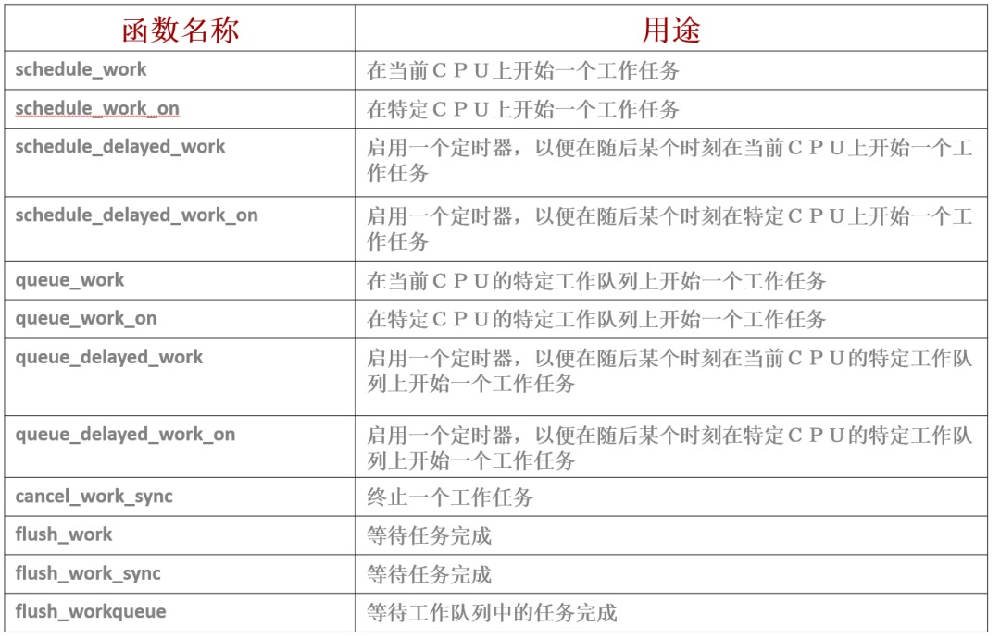
在使用上，工作队列与tasklet是类似的：
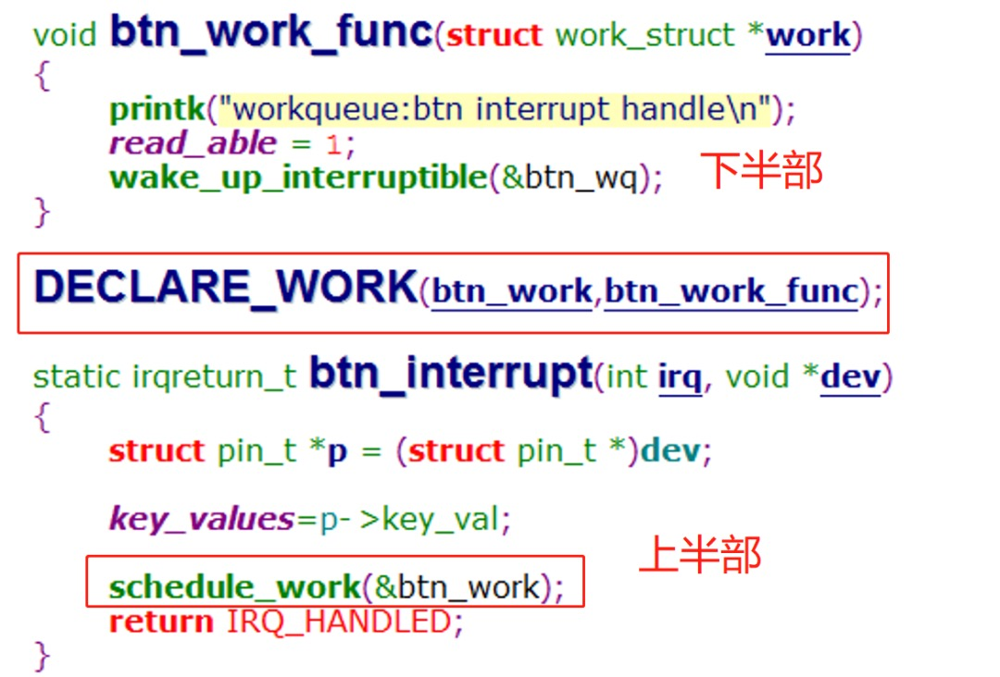
硬中断、软中断、用户进程之间的优先级
我们知道按照优先级来说，中断>软中断>用户进程，也就是说中断可以打断软中断，而软中断又可以打断用户进程。
1 为什么出现 ksoftirqd 线程
-
问题是什么? 如果软中断全部在 ksoftirqd 线程中执行, 那么它肯定是可以再调度的, 除非 ksoftirqd 线程一直是所有线程中最高优先级的
-
事实是什么?
-
- 如果软中断本身出现的频率较高，再加上他们又有将自己重新设置为可执行状态的能力，那么就会导致用户空间的进程无法获得足够的处理时间，因而处于饥饿状态。为了避免用户进程的饥饿。内核开发者做了一些折中，最终在内核的实现方案中是不会立即处理由软中断自身重新触发的软中断（不允许软中断嵌套）。而作为改进，内核会唤醒一组内核线程来处理这些过多的软中断，这些内核线程在最低优先级上运行（nice 值是 19），这能避免它们跟其他重要的任务抢夺资源，但它们最终肯定会被执行，所以这个方案能够保证软中断负载很重的时候，用户进程不会因为得不到处理时间而处于饥饿状态，相应的，也能保证过量的软中断终究会得到处理。
-
- 读者可能会对系统上运行的
ksoftirqd感到疑惑，该进程主要用于在系统的软中断负载过高时降低软中断的处理。正规处理中，如果内联的软中断进程代码在循环处理 10 次之后，发现还需要处理更多的软中断(由于不断产生中断)，此时中断进程会唤醒合适的 ksoftirqd (每个 CPU 都有一个 ksoftirqd 进程)进程并退出，后续由 ksoftirqd 进程处理软中断。Ksoftirqd 可以被(硬件或软件)中断上下文之外的软中断打断，这种处理是必要的，否则 Ksoftirqd 在处理下一个软中断前可以运行任意时间。在老的内核中，Ksoftirqd 进程以最低的优先级运行，即对软中断的处理取决于该进程是系统上的最高优先级还是最低优先级。从 2.6.23 开始，Ksoftirqd 默认使用普通用户优先级运行。
- 读者可能会对系统上运行的
-
- 也就是说
软中断默认是在硬中断处理结束之后就执行, 但是万一系统上有太多软中断要处理, 为了避免用户进程饥饿, 就把软中断放到 ksoftirqd 进程去执行.
- 也就是说
- 软中断和实时性
2 如何使用 ksoftirqd（进程上下文）来运行 softirq（中断上下文）
- I find it quite puzzling and difficult to think how ksoftirqd (process context) is employed in order to run softirqs (interrupt context)
"ksoftirqd is implemented as a set of threads, each of which is constrained to only run on a specific CPU. They are scheduled (at a very high priority) by the normal task scheduler. This implementation has the advantage that the time spent executing the bottom halves is accounted to a system task. It is thus possible for the user to see that the machine is overloaded with interrupt processing, and maybe take remedial action.
Although the work is now being done in process context rather than bottom half context, ksoftirqd sets up an environment identical to that found in bottom half context. Specifically, it executes the softirq handlers with local interrupts enabled and bottom halves disabled locally. Code which runs as a bottom half does not need to change for ksoftirqd to run it."
- ksoftirqd 设置了一个与下半部分上下文中相同的环境, 也就是说 ksoftirqd 进程设置了下半部环境
3 软中断执行的三个场景
The previous section has described how software interrupts are handled in interrupt context on the return path from hardware interrupt handling, but there is also a kernel thread (in fact, one per CPU) dedicated to handling software interrupts. This thread is woken up when the load of software interrupts becomes too great to handle in interrupt context (it would take too many machine cycles from the current process).
- 默认情况下（第一种），硬中断返回的时候就开始执行软中断. 如果软中断太多, 则进入第二种
- 第二种， 在 softirqd 内核线程下
-
第三种, 显式调用软中断的内核代码
-
第一种
kernel/softirq.c
/*
* Exit an interrupt context. Process softirqs if needed and possible:
*/
void irq_exit(void)
{
#ifndef __ARCH_IRQ_EXIT_IRQS_DISABLED
local_irq_disable();
#else
WARN_ON_ONCE(!irqs_disabled());
#endif
account_irq_exit_time(current);
preempt_count_sub(HARDIRQ_OFFSET);
if (!in_interrupt() && local_softirq_pending())
invoke_softirq();
tick_irq_exit();
rcu_irq_exit();
trace_hardirq_exit(); /* must be last! */
}
static inline void invoke_softirq(void)
{
if (!force_irqthreads) {
#ifdef CONFIG_HAVE_IRQ_EXIT_ON_IRQ_STACK
/*
* We can safely execute softirq on the current stack if
* it is the irq stack, because it should be near empty
* at this stage.
*/
__do_softirq();
#else
/*
* Otherwise, irq_exit() is called on the task stack that can
* be potentially deep already. So call softirq in its own stack
* to prevent from any overrun.
*/
do_softirq_own_stack();
#endif
} else {
wakeup_softirqd();
}
}
- 综上所述,
irq_exit()--->invoke_softirq()--->__do_softirq()
4 扩展
The softirq and tasklet are both kind of bottom-halves mechanism. Sleep is not allowed becuase they run under interrupt context not process context. If sleep is allowed, then the linux cannot schedule them and finally cause a kernel panic with a dequeue_task error. The interrupt context does not even have a data structure describing the register info, so they can never be scheduled by linux. If it is designed to have that structure and can be scheduled, the performance for interrupt handling process will be effected.